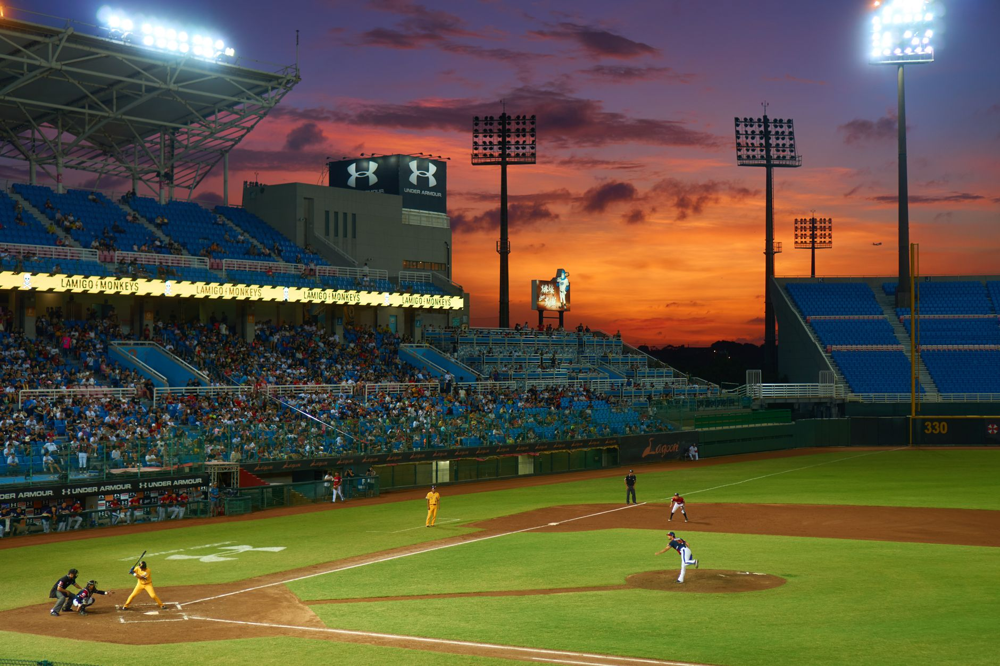

The high stakes of a winner-take-all matchup
In the world of Major League Baseball, there is no pressure quite like a Game 5 in the postseason. When the season comes down to a single nine-inning battle, every single pitch carries the weight of an entire city's expectations. The Chicago White Sox and the Cleveland Guardians find themselves in this exact position, facing off in a do-or-die scenario that will determine who moves one step closer to the World Series and who heads home with nothing but memories.
For the White Sox, this game represents a chance to validate a season defined by grit and unexpected resilience. They have fought through tough stretches to find themselves in this position, and the momentum from their recent performances suggests they are ready for the ultimate test. On the other side, the Guardians are looking to leverage their home-field advantage and their reputation for disciplined, fundamental baseball to shut down the White Sox offense.
The psychological aspect of a winner-take-all game cannot be overstated. Teams that have struggled with consistency throughout the regular season often find a new gear in October, while teams that have dominated may find themselves tightening up under the intense scrutiny of the playoff spotlight. Both squads will need to manage their emotions and stay focused on their specific game plans to avoid early errors that could prove fatal.
Pitching dominance and bullpen management
The outcome of Game 5 will almost certainly be decided by the arms on the mound. Both managers are facing a complex puzzle when it comes to deciding who starts and, more importantly, when to turn to the bullpen. In a game where one run can change everything, the ability to bridge the gap between the starter and the closer is the difference between victory and defeat.
Key factors for the coaching staffs will include:
In a winner-take-all game, you don't just play the game; you play the matchups, and every decision is magnified a thousand times.
Offensive firepower and clutch hitting
While pitching sets the foundation, the offense must provide the spark. In the ALDS, we have seen that even the most dominant pitchers can be human when faced with disciplined hitters who refuse to chase bad pitches. The White Sox will rely on their core lineup to drive in runners in scoring positions, a task that has been their primary strength throughout this playoff run.
The Guardians, meanwhile, have showcased a lineup that thrives on contact and situational hitting. They don't necessarily need the long ball to win; they rely on moving runners, executing bunts, and putting pressure on the defense. This style of play can be incredibly frustrating for opposing pitchers, as it forces them to throw strikes and avoid the mistakes that lead to big innings.
Expect to see a heavy emphasis on early-count hitting. In a game of this magnitude, hitters often become overly cautious, looking for the perfect pitch that may never come. The players who can stay aggressive and attack the zone will likely be the ones standing on third base when the decisive runs start to score.
Defensive precision and error prevention
In a winner-take-all scenario, a single defensive lapse can be the turning point of the entire series. A missed ground ball, a thrown error, or a slow relay can result in unearned runs that deflate a team's energy. Both the White Sox and the Guardians have boasted reliable infields, but the pressure of Game 5 tests the mental fortitude of every player on the field.
The outfield play will also be critical. With the potential for extra-base hits in high-pressure moments, outfielders must be prepared to track down deep flies and make sure no ball reaches the wall untouched. The synergy between the infield and outfield, especially during double plays, will be a key metric for success.
Ultimately, defense is about focus. It is about staying locked in during the quiet moments so that you are ready when the chaos erupts. For the Guardians, playing at home means the crowd will be loud, which can either fuel their defense or distract them. The White Sox will need to remain calm in an environment that is clearly designed to favor their opponents.
Looking back at the road to game five
To understand the intensity of this upcoming matchup, one must look at how the series has unfolded thus far. It has been a rollercoaster of emotions, with momentum shifting wildly between innings and games. The resiliency shown by both teams has been nothing short of remarkable, setting the stage for this final showdown.
The journey to this point was defined by high-tension moments and incredible individual performances. If you missed the action that led us here, you should definitely check out our deep dive into how the Guardians managed to force this deciding game in our article titled Guardians Force Game 5 in ALDS After Dramatic Comeback at https://dhyey.bond/blog/guardians-force-game-5-in-alds-after-dramatic-comeback/. That game perfectly encapsulated the grit required to survive in the postseason.
As we head into Game 5, the history of this series will be written by whoever can best handle the weight of the moment. Whether it is a walk-off hit, a spectacular diving catch, or a dominant relief appearance, the legends of the 2026 postseason are being forged in real-time.
See Also
If you enjoyed this Baseball News article, check out Guardians Force Game 5 in ALDS After Dramatic Comeback for more useful reading.